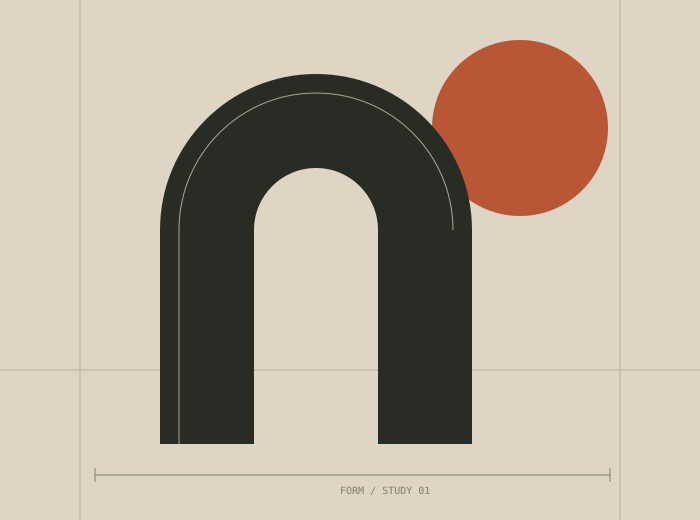

Геометрия покоя
Окружность, плоскость и немного воздуха.
Форма / Функция / Чувство
Предметы, идеи и пространства,
в которых хочется задержаться.

01 / Визуальные исследования
Окружность, плоскость и немного воздуха.
Контраст масштаба и выразительная антиква.
Интервалы, из которых складывается характер.
Показано исследований: 3
02 / Заметка о стиле
Эта страница показывает редакционное направление: много воздуха, сильная типографика, спокойный цвет и точная композиция. FORMA — условное название демо, а не существующий клиентский проект.
Обсудить сайт в таком стиле ↗